Ο φωνητικός βοηθός της οικογένειας
Πες το όπως σου βγαίνει.
Ο Κέρβος ζει σε μια μικρή φούσκα στην άκρη της οθόνης σου, πάνω από τις εφαρμογές σου. Πες «Κέρβε» και μίλα του στα ελληνικά.
Μίλα στον ΚέρβοΔοκίμασε να σύρεις τη φούσκα στην άκρη της σελίδας.
Η φούσκα μένει πάνω από την εφαρμογή σου.
Εσύ: Κέρβε, αύριο στις 6 γυμναστήριο. Κέρβος: Μπήκε: αύριο στις 6 το απόγευμα.
Κέρβος Messenger
Διάλεξε ένα παράδειγμα για να δεις την απάντηση του Κέρβου.
● εδώ για σένα
Σε καταλαβαίνει, ακόμα κι όταν ακούσει λάθος
Πάτησε μια κάρτα για να δεις τι κατάλαβε.
Τον δοκιμάζουμε κάθε μέρα με εκατοντάδες «παγίδες» του λόγου.
Στον δρόμο, μαζί σου
Ξέρει πού είσαι μόνο τη στιγμή που ρωτάς. Ποτέ στο παρασκήνιο.
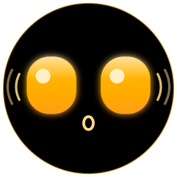
🧭 Πώς πάω στο Airbnb;
Ανοίγω τη διαδρομή με τα μέσα μεταφοράς.
Πάρκαρα εδώ
Το κράτησα 🚗
Πού είναι το αμάξι;
Σε πάω με τα πόδια.
Αποθήκευσε αυτή τη διεύθυνση ως κατάλυμα
Το κράτησα.
Επιστροφή στο κατάλυμα
Ανοίγω τη διαδρομή για το κατάλυμα.
Πού είμαι;
Είσαι στην Ομονοίας 12, Καβάλα 65302.
Πόσο απέχω από τη Θεσσαλονίκη;
Μέχρι Θεσσαλονίκη: 128 χλμ σε ευθεία. Διάλεξε διαδρομή:
Παράδειγμα συνομιλίας
Αν χρειαστείς βοήθεια
Προσομοίωση. Δεν ζητά ούτε στέλνει την τοποθεσία σου.
Στέλνω την τοποθεσία σου στη Μαρία σε 5…
Υποσχέσεις
- Η μνήμη του μένει στο κινητό σου
- Δεν βλέπει την τοποθεσία σου στο παρασκήνιο
- Απαντά με φωνή μόνο όταν του μιλάς
- Χωρίς διαφημίσεις
Μια μέρα με τον Κέρβο
· Πρωί
Καλημέρα!
Σήμερα έχεις γυμναστήριο στις 6.
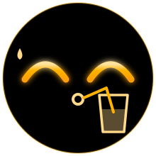
· Διάλειμμα
Ώρα για νερό
Μια γουλιά και συνεχίζουμε.
· Περιέργεια
Ξέρεις ότι…
Οι μέλισσες χορεύουν για να δείξουν πού βρήκαν τροφή;
· Βόλτα
Βγες λίγο έξω
Λίγος καθαρός αέρας κάνει καλό.
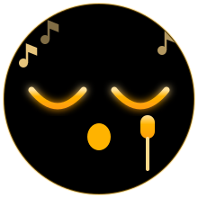
· Ραδιόφωνο
Βάζω ραδιόφωνο
Λίγη μουσική για το βράδυ.
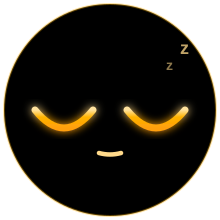
· Ύπνος
Καληνύχτα
Τα λέμε αύριο.
Οι φατσούλες του Κέρβου
Ήρεμος
Περιμένει να του μιλήσεις.
Χαρά
Όταν χαίρεται που σε βλέπει.
Γέλιο
Όταν του λες κάτι αστείο.
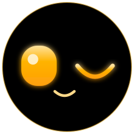
Κλείνει το μάτι
Όταν κρατά μια μικρή υπενθύμιση.
Αγάπη
Όταν του λες κάτι τρυφερό.
Ακούει
Όταν του μιλάς.
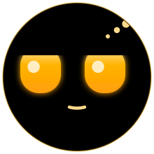
Σκέφτεται
Όταν ετοιμάζει την απάντησή του.
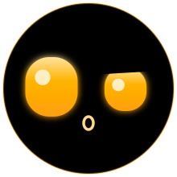
Περιέργεια
Όταν κάτι του κινεί την περιέργεια.
Σύγχυση
Όταν χρειάζεται μια διευκρίνιση.
Περηφάνια
Όταν κάτι πετύχει.
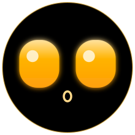
Έκπληξη
Όταν ακούει κάτι απρόσμενο.
Ντροπαλός
Όταν του κάνεις κομπλιμέντο.
Λύπη
Όταν κάτι τον στενοχωρεί.
Θυμωμένος (φωτιές)
Όταν κάτι τον εκνευρίζει.
Νυστάζει
Όταν φτάνει η ώρα του ύπνου.
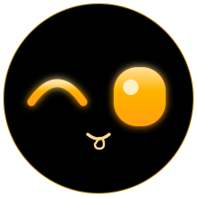
Παιχνιδιάρης
Όταν έχει όρεξη για παιχνίδι.
Μηχανικός
Όταν μιλά για κατασκευές.
Επιστήμονας
Όταν μοιράζεται κάτι που έμαθε.
Γιατρός
Όταν θυμίζει ένα ραντεβού με γιατρό.
Αγγελικό πρόσωπο
Όταν κάνει τον αθώο.
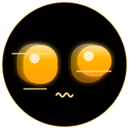
Γκλιτς (κούνημα)
Όταν κουνάς γρήγορα τη φούσκα.
Ήλιος
Όταν έχει ήλιο.
Βροχή
Όταν προβλέπεται βροχή.
Πίνει νερό
Όταν σου θυμίζει να πιεις νερό.
Βγες έξω
Όταν σου λέει να βγεις λίγο έξω.
Καραόκε
Όταν παίζει μουσική.
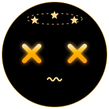
Λιποθύμησε (μαξιλάρι)
Όταν η φούσκα ζαλίζεται.
Για όλη την οικογένεια
Κάθε μέρα, άλλος έχει κάτι να του πει.
«Πάρε γάλα»
«Πότε έχω κολύμβηση;»
«Πού είναι το φαρμακείο;»
«Θύμισέ μου το χάπι στις 9»
Ερωτήσεις
Χρειάζεται internet;
Για τις ερωτήσεις χρειάζεται σύνδεση. Τα ραντεβού και η λίστα γράφονται στο κινητό και συγχρονίζονται μόλις βρει σύνδεση.
Ακούει συνέχεια;
Περιμένει μόνο να ακούσει το όνομά του, πάνω στο κινητό. Ό,τι του πεις μετά πάει στην αναγνώριση ομιλίας της Google για να γίνει κείμενο.
Πού μένουν τα δεδομένα μου;
Η μνήμη και η λίστα μένουν στο κινητό. Τα ραντεβού μπαίνουν στο Ημερολόγιο Google που ήδη χρησιμοποιείς.
Υπάρχει στο iPhone;
Για την ώρα ο Κέρβος είναι για Android.
Πόσο κοστίζει;
Ο Κέρβος είναι σε δοκιμές. Γράψε μας.
Δες τον στην πράξη
Η μνήμη του μένει στο κινητό σου.